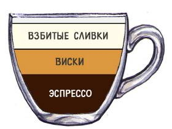
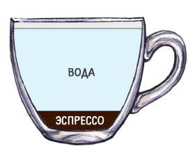
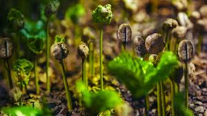
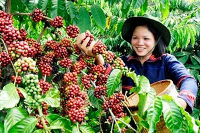

Виды кофейных напитков
Айриш

двойной эспрессо с добавлением виски и взбитых сливок.
Американо

на ¼ состоит из эспрессо, на ¾ — из воды.
Выращивание и обработка кофе

В рассаднике, где обеспечивается нужное количество солнечного света и влаги, сажают специально выведенные семена кофе.
Через десять недель появляются молодые ростки. После достижения саженцами высоты 5 – 10 см
их пересаживают отдельно в пластиковые пакеты и затем за ними продолжают ухаживать в парниках.
После того, как высота 4 – 5 месячных саженцев достигает 30 – 40 см, их высаживают на плантации.
Кофейные саженцы сажают рядами, расстояние между которыми делают с учетом ухода за растениями и землей,
а также уборки урожая.

Кофейное дерево впервые начинает цвести на третий год, в пяти - семилетнем возрасте дерево
достигает зрелости. Кофейные деревья дают урожай до 50 лет, но интенсивное плодоношение продолжается только 15 лет.
Число урожаев в году зависит от температуры и влажности. В горах, где температура ниже, созревание длится дольше, урожай
собирают один раз, в теплых влажных долинах – до четырех раз в год. За год одно дерево приносит до 3 кг сырых кофейных зерен, а с 1 га
плантаций их получают до 20 ц. Плоды арабики созревают восемь – девять месяцев. Период созревания робусты несколько дольше – от десяти до одиннадцати месяцев.
Время сбора урожая различается в зависимости от географического положения,
климата, высоты над уровнем моря и сезона в соответствующем регионе произрастания.
Комиксы с кофе
Назад...